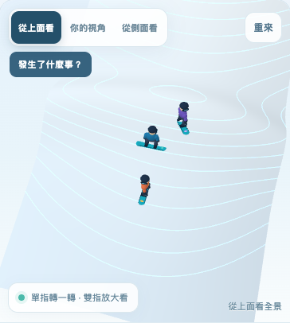
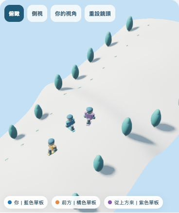

第一題｜原版 vs 67.js
相同的坡頂盲區劇情與 A／B／C 人物最終位置。以下是真實 Chrome 渲染截圖，不是設計模擬圖。切換分支觀察角色位置、雪道遮蔽與光影。


限制：這是功能／畫質的初步對照，鏡頭構圖、模型與畫布高度不完全等同，不能直接以這些圖宣稱效能優劣或教學效果提升。已測模擬手機 Chrome，實際 iPhone Safari 仍需補驗。公開技術試作，尚非正式產品或滑雪安全認證。2026-11-12 已修正 67.js 第一人稱鏡頭遮擋與轉向問題。